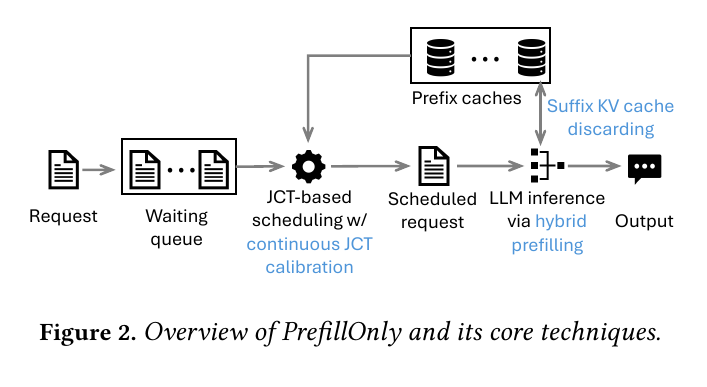
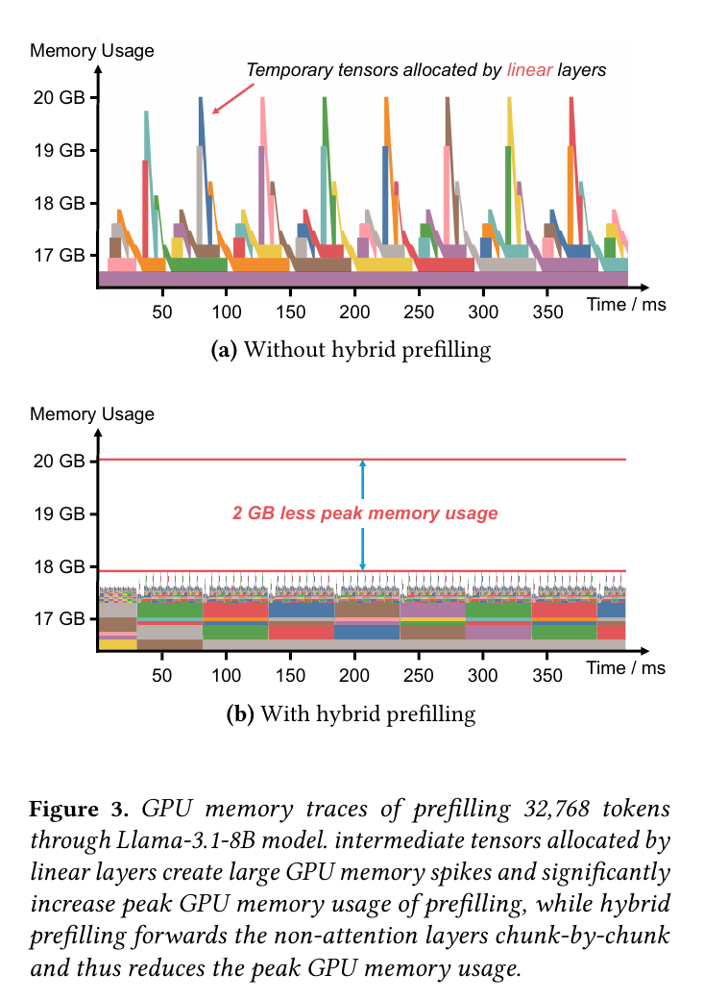
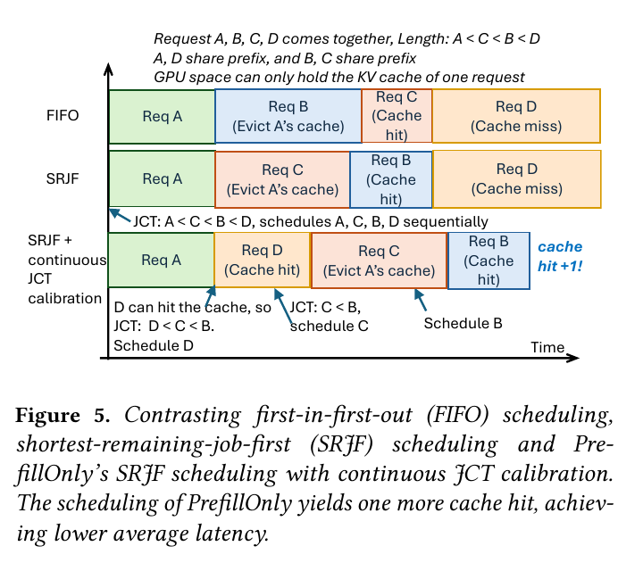
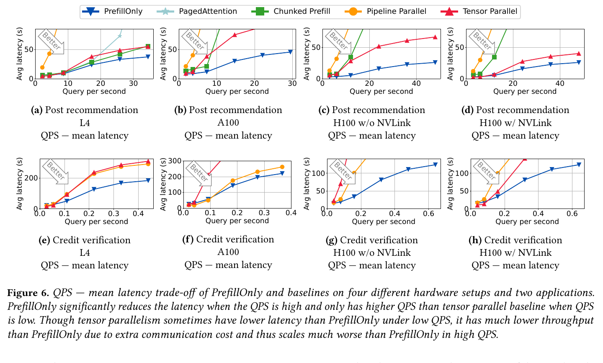
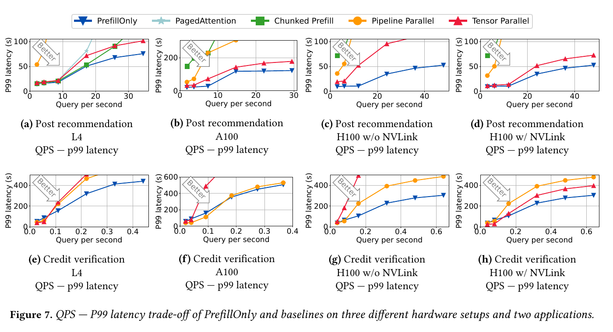
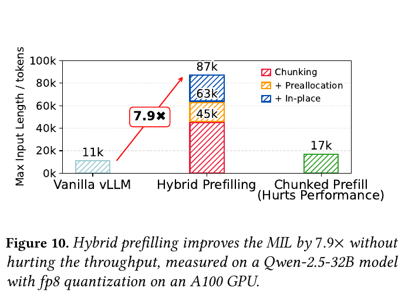
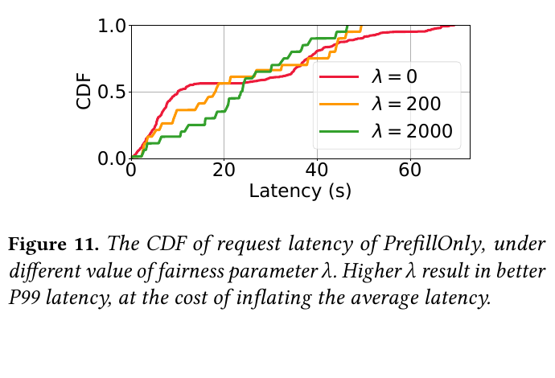

PrefillOnly: An Inference Engine for Prefill-only Workloads in Large Language Model Applications
當應用保證每個長輸入請求只輸出一個 token，PrefillOnly 便以混合預填充（hybrid prefilling）降低多層感知器（Multilayer Perceptron, MLP）暫存張量峰值、保留 prefix 而丟棄 suffix 鍵值快取（key-value cache, KV cache），並按最新 cache state 重算工作完成時間（Job Completion Time, JCT）後逐請求排程；在兩個合成 workload 上，作者報告其可在平均與 P99 latency 不高於 baselines 時承受 1.4–4.0× 的每秒查詢數（queries per second, QPS）。Abstract · PDF p.1§7, §7.2 · PDF pp.8, 10–12 · Fig. 6–10
文章目錄
Prefill、MIL、暫存記憶體與 Prefix Locality
只需四個前置概念：prefill 與 decode 的分工、短命 activation 與可重用 KV 的差別、prefix hit 如何改變剩餘工作量，以及 compute-bound prefill 為何不像 decode 那樣從 batching 獲益。它們會直接推導下一節的四項系統需求。
最小前置地圖
| 概念 | 讀到什麼程度就夠 | 後文用途 |
|---|---|---|
| Prefill / decode | Prefill 一次處理全部 input 並產生第一 token；decode 才會逐 token 重複 forward。 | 只有一個 output token 時，不存在同一請求的後續 decode，因此 suffix KV 不必為它保留。 |
| Activation / KV cache | MLP intermediates 是本輪 operator 的短命工作空間；attention KV 可供後續 token 或共享 prefix 的另一請求重用。 | Hybrid prefilling 控制前者峰值，suffix policy 控制後者壽命，不能把兩者混為一談。 |
| Prefix caching | 兩個 requests 若共享 prompt prefix，後者可跳過該段計算；cache 建立或逐出會改變 cache-miss token 數。 | 排程必須讀取「現在」的 cache state，不能只看 arrival-time input length。 |
| Compute-bound / memory-bound | 作者把長 prefill 描述為 compute-bound、decode 描述為 memory-bandwidth-bound；前者合併 requests 不會像 decode batching 一樣近似免費地攤銷 weight reads。 | PrefillOnly 一次跑一個 request，換取較低 queueing latency 與每步重新排程的機會。 |
可觀察症狀：輸出短，engine 卻仍按長生成設計
推薦、信用驗證與資料標註可把 sampling vocabulary 限制為少數 labels；例如只允許 Yes/No，以 \(P(\texttt{Yes})\) 作 score。輸出雖只有一個 token，使用者歷史或信用紀錄仍可形成數萬-token prompt。§2.3–2.4 · PDF pp.3–4
作者主張 此類 workload 值得使用專用 GPU，因為與一般生成流量混跑會讓 decode 更常與 prefill 同 batch，抬高生成工作的平均與 P99 time-per-output-token；推薦流量本身也可能達每秒數萬 queries。這是動機與容量估計，不是本文的 production trace 實驗。§2.4 · PDF p.4
根因與最近方案的缺口
實驗事實 Llama-3.1-8B 的 100k-token request 約需 12 GB KV；A100 40 GB、Qwen-32B FP8 的 PagedAttention MIL 為 11k tokens。把 20k-token input 以 512-token chunks 做一般 chunked prefill，作者量得 end-to-end throughput 下降 14%，MIL 增幅仍不到 2×；只丟棄 active-layer KV，在 L4/Llama-3.1-8B 也僅得到 1.6× MIL。§2.1, §2.5–2.6 · PDF pp.3–5
這些觀察揭示兩個根因：峰值不只由 KV 構成，linear/MLP intermediates 也很大；完整 chunking 雖壓低當下 activation，卻迫使 engine 保存前面 chunks 的多層 KV，還降低 attention kernel 效率。跨 GPU 的 tensor parallel（TP）與 pipeline parallel（PP）可容納更長 input，但分別引入 all-reduce 與 variable-length pipeline bubbles。§2.5–2.6 · PDF pp.4–5
分析 因此目標不是單純「少存 KV」：系統必須同時壓低短命 activation、維持完整 attention 效率、保留跨請求 prefix reuse，並在 cache state 改變時更新 request priority。下一節把這四個必要條件定義為 R1–R4。
有了這些背景，下一個問題是：Decode-centric Engine 如何誤配 Prefill-only 工作負載
Decode-centric Engine 如何誤配 Prefill-only 工作負載
作者的 workload contract 與系統目標
- 輸入
- 長 prompt、固定模型／硬體組態，以及可接受的單-token label 集合；請求 \(r\) 有 \(n_{\text{input}}\) 個 tokens，其中當下有 \(n_{\text{cached}}\) 個 prefix tokens 可命中 cache。
- 輸出
- 第一個 output token 或候選 token 的機率分布；推薦案例使用 \(P(\texttt{Yes})\) 作 score。
- 系統目標
- 在平均與 P99 latency 不高於比較系統時提高可持續 QPS，同時提高最大輸入長度（Maximum Input Length, MIL），且不靠會降低 throughput 的全 input chunking 或跨 GPU inference。
- 受控資源
- 單次 forward 的 activation／working KV、跨請求 prefix KV cache、請求順序，以及兩張 GPU 的 instance／parallelism 配置。
由失敗機制推導的需求
| 症狀與根因 | 最近方案為何不夠 | 導出的成功條件 |
|---|---|---|
| KV 丟掉後，MLP intermediates 仍主導 peak memory。 | Naive KV discard 只帶來 1.6× MIL。§2.6 · PDF p.5 | R1 Working-set：暫存張量必須只隨 chunk 大小、而非完整 input 長度成長。 |
| Attention 有跨 token dependency；其 kernel 效率受 chunking 影響。 | 一般 chunked prefill 在作者的 20k/512 設定下降 14% throughput。§2.5 · PDF p.4 | R2 Compute：只能 chunk token-separable path，attention 維持正常完整序列執行。 |
| 本次請求不再 decode，但未來請求可能共享 prefix。 | 全丟 KV 會消滅 prefix hit；全留又限制 MIL。 | R3 Reuse：優先保留可跨請求重用的 prefix，讓本次請求不再需要的 suffix 儘早離開 GPU；被丟棄部分仍可能失去未來 reuse。§5.1 · PDF p.7 |
| 每次執行都可能建立或逐出 prefix cache，令等待請求的 service time 改變。 | FCFS 不用 JCT；arrival-time SJF/SRJF 使用過期估計並錯失 cache locality。 | R4 Scheduling：每個決策點重算 cache-aware JCT，並以 aging 避免 starvation。§6.2–6.3 · PDF pp.7–8 |
分析 「JCT 是 deterministic」較精確的解讀是：在固定模型／硬體與當下 cache state 下，service work 比任意長度生成更可預測；實際 end-to-end completion time 仍受 queue、cache eviction 與 contention 影響，所以系統實際使用 estimator／proxy，而不是精確閉式解。§6.3 · PDF p.8
假設、約束與不在範圍內的情況
- 輸出必須恰為一個 tokenizer token；多 token label、chain-of-thought 或 structured generation 不在範圍內。
- 使用者事先提供 MIL；engine 以 fake request 做 memory profile。
- 評估將 prefill-only 與 generative workloads 分開部署；本文沒有處理混合 workload interference。
- 方法需要 non-attention computation 沿 token 維度可分離，且 graph／buffer liveness 允許安全的 preallocation 與 in-place reuse；論文只在三個 dense LLM families 上評估。
| 路線／代表工作 | 主要優化 | 與 PrefillOnly 的差異與取捨 |
|---|---|---|
| Orca、vLLM / PagedAttention | Continuous batching；token-granularity KV paging，提升一般 autoregressive decode throughput。 | 假設輸出長度不定，必須保留 decode 所需的所有層 KV；PrefillOnly 利用單 token contract 縮短 suffix KV lifetime，且不用 batching。 |
| DistServe | 把 prefill 與 decode 分離到不同 GPUs，以 TTFT／TPOT SLO 提升 goodput。 | 本文只測專用 prefill-only workload；作者推測可把 PrefillOnly 放到 disaggregated prefill node，但沒有實作／評估。 |
| Sarathi-Serve / Chunked Prefill | 把 prefill 分 chunk，以改善排程或容納長 input。 | 一般 chunking 也切 attention，必須保存前 chunks 的多層 KV 且可能降低 kernel 效率；PrefillOnly 只切 token-wise non-attention path。 |
| Tensor / Pipeline Parallel | 跨 GPU 分散模型／計算以提高 MIL 或降低低負載單請求 latency。 | TP 有 all-reduce、PP 有 bubbles；PrefillOnly 以單 GPU instance 避免通訊，偏向 high-QPS throughput，但絕對 MIL 不一定最高。 |
| CacheGen、CacheBlend、KV compression | 壓縮／串流 KV，或融合非 prefix cache 以減少載入與重算。 | PrefillOnly 不改 KV 內容，作者認為可相容；但本文沒有整合測試。 |
| LMCache / CPU offload | 將 KV 放到 GPU 之外的 tier。 | 可避免 suffix discard 犧牲未來 reuse；本文僅列 future work。 |
| PyTorch 2；Tiresias、Optimus 等傳統 DL systems | 前者以 graph compilation 消除不必要 tensors；後兩者依 JCT 排程。 | LLM 特有之處是大型 token-wise MLP intermediates，以及 JCT 會隨 prefix cache hit 動態改變。 |
§8 · PDF p.12§9 · PDF pp.12–13
分析 PrefillOnly 與「更快 attention kernel」並非互斥；它主要改變 operator placement、tensor lifetime 與 request order。最有價值的比較對象應是同樣針對長 prefill、開啟 prefix caching、且以相同 GPU budget 運作的系統，而不是一般 decode-heavy serving。
問題的限制已經清楚；接著要抓住作者最關鍵的轉念。
只輸出一個 Token，為什麼仍需要專用推論引擎
- 問題：推薦、信用驗證等判別式應用可能送入數萬 tokens，卻只需一個候選 token；一般 serving engine 仍按任意長度生成來保存所有層 KV，排程也不利用固定輸出長度。
- 根因：即使丟棄 KV，token 數成比例放大的 MLP intermediates 仍製造峰值；同時 prefix cache 的建立與逐出會持續改變每個等待請求的實際工作量。
- 關鍵洞察：只切沿 token 可獨立計算的 non-attention path，便能控制暫存張量而不切 attention；單 token contract 又允許 suffix KV 不再為本次請求的後續 decode 保留。
- 方法：hybrid prefilling、suffix KV cache discarding 與 continuous JCT calibration 分別處理 working-set peak、跨請求 reuse、cache-dependent scheduling。
- 證據：作者以 4 種雙 NVIDIA GPU／模型組態、2 個合成 workload 比較 4 個 baselines；headline 是 1.4–4.0× 可承受 QPS，A100/Qwen-32B FP8 的最大輸入長度（Maximum Input Length, MIL）為 87k，而 PagedAttention 為 11k、Chunked Prefill 為 17k。§7 · PDF pp.8–12 · Table 2, Fig. 6–10
- 邊界：未測 production trace、混合生成 workload、模型品質、能耗或成本；graph rewrite 的通用性、scheduler overhead 與 cache policy 細節也未充分揭露。
作者主張 單 token 輸出讓大部分本次請求產生的 KV 不再被 decode 重用，也讓工作量比任意長度生成更可預測，因而同時打開記憶體與排程兩個優化空間。§1 · PDF pp.1–2
實驗事實 在作者的模擬 recommendation 與 credit-verification workloads 上，PrefillOnly 的可承受 QPS 為 baseline 的 1.4–4.0×；A100/Qwen-32B FP8 的 maximum input length（MIL）由 vanilla vLLM 的 11k 增至 87k tokens。§7 · PDF pp.8–12 · Table 2, Fig. 6–10
分析 這篇工作的價值不是把一般生成式 serving 全面加速，而是示範：應用若能提供更強的輸出長度 contract，engine 就能安全改寫 tensor lifetime、KV retention 與 request order；相對地，contract 一旦放寬，多數收益都必須重新驗證。
直覺成立後，再沿著一次完整執行看它如何落成系統。
Hybrid Prefilling、Suffix KV 丟棄與 Cache-aware JCT
先走一次端到端請求
把 Figure 2 視為兩個回授迴圈：memory profile 決定 inference working set 與 cache budget；每個完成請求又改變 prefix-cache state，供下一次 scheduler 校準。
- Profile run（R1/R3）：使用者給定 MIL；PrefillOnly 以同長度 fake request 跑一次 forward，量測 peak GPU memory，剩餘空間留給 prefix KV cache。
- Request intake：OpenAI-compatible HTTP server 收到 request，tokenize 後透過 ZeroMQ RPC 放進 scheduler process 的 waiting queue。
- 逐步排程（R4）：每個 scheduling step 枚舉 queue，依最新 prefix-cache hit 與等待時間重算 score，只選一個 request。
- Hybrid forward（R1/R2）：attention 處理完整序列；沿 token 可獨立計算的 non-attention virtual layer 才分 chunk。
- KV lifetime（R3）：盡量保留可供後續 request 重用的 prefix KV；目前實作丟棄 suffix KV。完成後 cache state 改變，控制回到步驟 3。
- Response：executor 回傳單 token 的 probability score。
R1 + R2｜Hybrid prefilling：把 chunk boundary 放在 dependency 正確的位置
實驗事實 Llama-3.1-8B 以 32,768 tokens prefill 時，MLP intermediates 週期性把記憶體推近 20 GB；hybrid prefilling 的 trace 峰值約低 2 GB。Fig. 4 的兩個 MLP tensors 形狀為 \([32768,28672]\) 與 \([32768,14336]\)，相當於單層 KV 大小的 14× 與 7×。§4.1 · PDF p.6 · Fig. 3–4
Input/signal：torch.compile 產生的 computation graph 與 tensor shapes。Decision：把連續、沿 token 可分離的 operations 組成 virtual layer；attention 不分 chunk。Action：virtual layer 逐 chunk forward，完整 output 先配置後直接寫入對應 slice；若 input/output 同 shape 且生命期允許，再重用 input buffer。預期效果：把主要 temporary footprint 從完整序列縮到單一 chunk，同時避免 concatenate 的第二份完整 output 與一般 chunked attention 的效率損失。§4.2–4.3 · PDF pp.6–7
分析 論文稱非 attention layers「都是 linear layers」並不嚴謹，因自己的 Fig. 4 就含非線性 SwiGLU。正確的必要性質是沿 token 維度可分離；這足以讓 chunking 保持語義，但對有跨 token coupling 的 MoE capacity、convolution、SSM 或其他 operator，通用性尚未被驗證。
R3｜Suffix KV cache discarding：縮短本次請求不再需要的 KV 壽命
Input/signal：profile run 留出的 prefix-cache budget，以及 request 中可保留的 prefix。Decision：prefix KV 仍跨請求保存在 GPU，suffix KV 則不為不存在的 decode 保留。Action：hybrid prefilling 在單次 model forward 完成 request，使當前 layer 的 suffix KV 用完即可丟棄；實作重用 vLLM sliding-window attention abstraction，不改硬體 kernel。預期效果：以可能犧牲被丟棄部分的未來跨請求 reuse 為代價，換取較大 MIL，同時保留部分 prefix caching。§5.1 · PDF p.7§9 · PDF pp.12–13
分析 這不表示整個 engine 永遠只存在一層 KV：當前 request 的非保留 suffix working KV 可逐層釋放，但被選入跨請求 prefix cache 的 tokens 仍需保存多層 KV。論文未提供 prefix/suffix 邊界、allocation／eviction policy、fragmentation safety margin 或 OOM 行為。
R4｜Continuous JCT calibration：讓 locality 進入每一步決策
作者認為 prefill-only 工作 compute-bound，多 request batching 不會像 decode 一樣顯著提高 throughput，卻增加平均 latency，因此 PrefillOnly 一次只排一個 request；論文未描述 request 內部 preemption。Input/signal：waiting queue、當下 prefix-cache state 與每個 request 的等待時間。Decision：以 cache-miss tokens 預測 JCT，再扣除 aging term。Action：選 score 最小者；它完成並改變 cache state 後，對其餘 requests 全部重算。預期效果：把可立即 hit 的 request 提前，同時避免長 request 永久飢餓。§6.1–6.3 · PDF pp.7–8 · Fig. 5, Algorithm 1
對 waiting queue 中每個 request r：
讀取 input tokens、當下可命中的 prefix tokens、已等待時間
計算預測 JCT 並扣除 aging / fairness 項
選 score 最小者執行；完成後對剩餘 requests 全部重算Fig. 5 的四請求例子中，FIFO 與靜態 SRJF 都只有一次 cache hit；持續校準讓順序成為 A→D→C→B，得到兩次 hit。這是概念例示，不是量化 ablation。§6.2–6.3 · PDF p.8 · Fig. 5
候選 token 機率
推薦案例限制 sampling vocabulary 為兩個候選，並使用 \(P(\texttt{Yes})\) 作推薦分數；這描述應用輸出，不是 PrefillOnly 的優化公式。§2.3 · PDF p.3
Cache-aware JCT score
變數：\(Q\) 是 waiting queue；\(n_{\text{input}}\) 是輸入 token 數；\(n_{\text{cached}}\) 是依當下 cache state 可命中的 prefix tokens；\(T_{\text{queue}}\) 是等待時間；\(\lambda\) 是 aging／fairness 權重。較大 \(\lambda\) 會提高長時間等待 request 的優先序。§6.3 · PDF p.8 · Algorithm 1
作者可用每 1,000 tokens 粒度涵蓋 MIL 的 \((n_{\text{input}},n_{\text{cached}})\) profiling samples 訓練小型 linear regression；預設直接以 \(n_{\text{miss}}\) 代理 JCT。在 1×A100、Qwen-32B FP8 上，miss-token count 與實際 JCT 的 Pearson \(r=0.987\)。§6.3 · PDF p.8
分析 第 11 行原文寫成 score_min ← jct，但當輪沒有名為 jct 的變數；依第 9–10 行與正文語義，應為 score_min ← score。此外，演算法使用 \(T_{\text{queue}}\)，後文改稱 \(T_{\text{req}}\)，兩者都被定義成 queuing time。本摘要統一為 \(T_{\text{queue}}\)。§6.3 · PDF p.8 · Algorithm 1
複雜度與記憶體直覺
分析 設 layers 為 \(L\)、input tokens 為 \(n\)、hybrid chunk size 為 \(c\)、MLP width 為 \(d_{\mathrm{ff}}\)、waiting requests 為 \(|Q|\)。傳統 MLP temporary peak 約隨 \(n d_{\mathrm{ff}}\) 成長；hybrid path 把主要 chunk-local 部分壓到 \(c d_{\mathrm{ff}}\)，但仍需 layer-level input/output。MLP 與 dense attention 的算術階數沒有改變，所以這是 peak-memory／constant-factor optimization，不是漸近 FLOPs 改善。每次排程線性掃描 queue 約為 \(O(|Q|)\)；若 \(N\) 個 requests 同時等待且不使用更進階資料結構，drain queue 最壞可達 \(O(N^2)\)。論文未量測 scan、prefix lookup、RPC 或 compile overhead。
{kind=link}

{kind=link}

{kind=link}

方法看似合理，真正的問題是：實驗有沒有把這條因果鏈撐起來？
容量、P99、公平性與 7.9× MIL 的因果拆解
先把主張對到測試
| 待檢驗主張 | 主要測試與 metric | 控制與比較 | 先天限制 |
|---|---|---|---|
| C1：PrefillOnly 在高負載可提供更好的 capacity–latency trade-off。 | Poisson arrivals 下掃 QPS，量 mean/P99 latency（Fig. 6–7）。 | 同為 2 張 GPU；比較 PagedAttention、Chunked Prefill、TP=2、PP=2。 | 非平行方案是 2 個單-GPU instances，TP/PP 是 1 個雙-GPU instance；低負載單請求資源形態不同。 |
| C2：Hybrid prefilling 不靠跨 GPU inference 即能擴大 MIL。 | 逐方案尋找 max input tokens（Table 2）；逐步加入 chunking、preallocation、in-place（Fig. 10）。 | 固定 A100/Qwen-32B FP8 做 component ablation。 | 未交代 MIL 搜尋步幅、OOM safety margin、chunk size 或 repetitions。 |
| C3：Continuous calibration 能利用 prefix locality。 | Recommendation workload 的 throughput 曲線與四-request illustrative schedule（Fig. 5、9）。 | 同 user 的 50 requests 經 affinity routing 到同一 instance。 | 沒有完整 workload 的 FIFO／靜態 SRJF／calibration cache-hit-rate ablation。 |
| C4：Aging term 能用平均 latency 換較佳 tail。 | 比較 \(\lambda=0,200,2000\) 的 latency CDF（Fig. 11）。 | 其餘設定未由論文逐項列出。 | 預設 \(\lambda=500\) 不在曲線中，亦無數值表或 confidence interval。 |
Workloads 與到達模型
| Workload | 使用者／請求 | 長度 | 總 tokens | 主要壓力 |
|---|---|---|---|---|
| Post recommendation | 20 users；每人 50 requests，每 request 對應一篇 post | user profile 11k–17k（Normal：mean 14k、std 3k）；post 150 tokens | 14,000,000 | 同一 user 的 50 requests 共享長 prefix，測 cache reuse 與排程 |
| Credit verification | 60 users；每人 1 request | 10 個月信用史，40k–60k tokens | 3,000,000 | 幾乎沒有同 user reuse，測長輸入與 MIL |
Request arrival 被建模成 Poisson process，透過調整 rate 改變 QPS。這是合成 workload，不是 production trace；論文也未提供 prompt 內容分布、tokenizer 差異或 burstiness／diurnal pattern。§7.1 · PDF pp.9–10 · Table 1
硬體與模型
| 組態 | GPU | 模型 |
|---|---|---|
| Low-end | 2× NVIDIA L4 PCIe，24 GB | Llama-3.1-8B |
| Middle-end | 2× NVIDIA A100 PCIe，40 GB | DeepSeek-R1-Distill-Qwen-32B，FP8 dynamic |
| High-end | 2× NVIDIA H100 PCIe，80 GB，無 NVLink | Llama-3.3-70B-Instruct，FP8 dynamic |
| High-end + NVLink | 2× NVIDIA H100 NVLink，80 GB | Llama-3.3-70B-Instruct，FP8 dynamic |
PrefillOnly 建於 vLLM，核心約 4.6k 行 Python，預設 fairness \(\lambda=500\)。論文未提供 CPU、主機記憶體、vLLM commit、PyTorch／CUDA／driver 版本、hybrid chunk size、warm-up、測量重複次數或 statistical interval。§7.1 · PDF p.10 · Table 3
Baselines、資源配置與指標
- PagedAttention：vLLM page-based KV management + first-come-first-serve scheduling。
- Chunked Prefill：把完整 input／attention path 分 chunk。
- Tensor Parallel（TP=2）：一個 request 同時使用兩張 GPU。
- Pipeline Parallel（PP=2）：模型切到兩張 GPU。
所有系統都開啟 prefix caching。PrefillOnly 與兩個非平行 baseline 各啟動兩個單 GPU instances，並以 user ID 固定路由到同一 instance；TP／PP 則讓單 request 使用兩張 GPU。總 GPU 數相同，但 low-QPS single-request latency 的資源形態不同，需連同 throughput 一起解讀。主要指標為 mean/P99 latency、QPS-throughput trade-off 與 MIL；未評估 accuracy、quality、energy 或 cost。§7.1 · PDF p.10
C1｜高負載 capacity–latency trade-off
實驗事實 觀察：作者總結 PrefillOnly 可承受 baseline 的 1.4–4.0× QPS，且平均與 P99 latency 不高於比較系統。負載點先以所有 requests 同時抵達 PrefillOnly 的吞吐定義 \(x\)，再測 \(x/4,x/2,x,2x,3x,4x\)。§7, §7.2 · PDF pp.8, 10–11 · Fig. 6–7
- 測試／metric
- 兩個 workloads、四種硬體組態上掃 QPS，分別觀察 mean 與 P99 latency。
- 支持的結論
- Fig. 6–7 一致顯示，高 QPS 時 PrefillOnly 的曲線較晚進入 queueing cliff，因此主要勝在 sustainable capacity，而非所有負載下的 service latency。
- 反例／caveat
- 低 QPS 時 TP／PP 能讓一個 request 使用兩張 GPU，某些組態 latency 低於 PrefillOnly；「4×」是跨設定最高值，不代表每張圖或任意 latency SLO 都固定四倍。
§7.2 · PDF p.9 · Fig. 6§7.2 · PDF p.11 · Fig. 7
C2｜不跨 GPU 的 Maximum Input Length
| 系統 | L4 24 GB | A100 40 GB | H100 80 GB |
|---|---|---|---|
| PagedAttention | 24k | 11k | 15k |
| Chunked Prefill | 46k | 17k | 25k |
| Pipeline Parallel | 72k | 38k | 183k |
| Tensor Parallel | 195k | 77k | 238k |
| PrefillOnly | 130k | 87k | 97k |
實驗事實 觀察：相對較強的非平行 baseline（Chunked Prefill），PrefillOnly 的 MIL 比例為 L4 \(130/46\approx2.8\times\)、A100 \(87/17\approx5.1\times\)、H100 \(97/25\approx3.9\times\)。這支持作者「最高約 5×、且不需平行化」的表述。§7 · PDF p.10 · Table 2
Caveat：L4/H100 上 TP 的絕對 MIL 仍較高，H100 上 PP 也較高；此實驗支持的是「用單 GPU instance 容納 workload 並避開通訊」，不是 PrefillOnly 永遠有最高絕對 context ceiling。
C3｜兩個 workload 分離兩種增益來源
Prefix-locality test
Recommendation：每 user 的 50 requests 共享 profile。高 QPS 下 Chunked Prefill throughput 下滑；作者歸因於 prefix-cache throttling。Calibration 會優先執行可命中新 cache 的 requests，而 TP／PP 雖有較大 cache space，仍承擔通訊或同步。§7.2 · PDF p.11 · Fig. 9
Long-input test
Credit verification：每 user 只有一個 40k–60k-token request，幾乎沒有同 user reuse；增益主要來自單 GPU 容納 input，避開 TP all-reduce 與 PP bubbles。NVLink 提升 TP throughput 後，Fig. 8 中 PrefillOnly 仍較高。§7.2 · PDF p.11 · Fig. 8
分析 兩個 workloads 的對照有助於分辨「cache-aware scheduling」與「避免跨 GPU」兩種來源，但 Recommendation 沒有完整系統下的 scheduler-only ablation，也沒直接報 cache-hit-rate；因此 Fig. 9 支持整體相關趨勢，不能單獨量化 calibration 的因果貢獻。
分析 Fig. 10 顯示 vanilla 11k、hybrid 87k，故 \(87/11\approx7.9\times\)，與 caption 一致；正文卻稱「相對 chunked prefill 超過 8.7×」。同圖 chunked prefill 為 17k，所以可重算比例其實是 \(87/17\approx5.1\times\)。本摘要採 bars／Table 2 可重算數字，不沿用該句。另 Table 2 把 A100/PP 的 MIL 寫成 38k，卻又標 credit workload（40k–60k）可執行；Fig. 10 稱模型為 Qwen-2.5-32B FP8，Table 3 則列 DeepSeek-R1-Distill-Qwen-32B-FP8-dynamic；Fig. 7 caption 寫「three hardware setups」，圖中實際有四欄。Table 2–3 · PDF p.10Fig. 7 · PDF p.11Fig. 10 · PDF p.12
C2｜Hybrid prefilling 的 component ablation
| 逐步加入設計 | MIL | 新增效果 |
|---|---|---|
| Vanilla vLLM | 11k | 基準 |
| 僅 chunking token-wise path | 45k | 最大單一增益，壓低 MLP temporaries |
| + output preallocation | 63k | 避免 concatenation 的雙份完整 output |
| + in-place reuse | 87k | 重用同形 input/output storage；總計 7.9× |
| 一般 Chunked Prefill（對照） | 17k | 可增加 MIL，但作者註明會傷效能 |
實驗事實 11k→45k 顯示 token-wise chunking 是最大單一增益；preallocation 與 in-place reuse 再把 MIL 推至 63k 與 87k。這組證據直接支持 R1 的 component contribution，但只測一個模型／GPU／precision 組合。§7.2 · PDF p.12 · Fig. 10
C4｜Fairness sensitivity
實驗事實 Fig. 11 比較 \(\lambda=0,200,2000\) 的 latency CDF：較大 \(\lambda\) 使右尾較短，而分布中段可右移，呈現 tail 與平均 latency 的方向性取捨。圖未列具體 mean、P99、workload 條件或 confidence interval，也未測實驗預設 \(\lambda=500\)，因此不能由此推導最佳值。§7.2 · PDF p.12 · Fig. 11
缺少的隔離實驗
- 沒有在完整 workloads 上直接比較 FIFO、靜態 SRJF 與 continuous calibration 的 mean/P99/cache-hit-rate 數值；Fig. 5 只是示意。
- 沒有 hybrid chunk size、MIL profile safety margin、prefix retention／eviction policy 的敏感度。
- 沒有獨立量測 scheduler queue scan、cache lookup、ZeroMQ、
torch.compilecompile／recompile overhead。 - 沒有 numerical-equivalence test 證明 graph rewrite、preallocation 與 in-place 在所有支援模型上維持結果一致。
{kind=link}

{kind=link}

{kind=link}

{kind=link}

數據回答了部分問題；剩下的是適用邊界與仍未被證明的部分。
工作負載契約、缺失消融與 Locality–Fairness 取捨
優點
- 從 workload contract 推導跨層優化：不是單點 kernel tweak，而是把 output-length certainty 連到 activation lifetime、KV policy 與 scheduler。
- 保留 prefix reuse：避免「全部 KV 都丟掉」這個看似簡單卻破壞跨 request reuse 的解法。
- 部署整合成本相對可控：建於 vLLM、以
torch.compilegraph rewrite 與既有 sliding-window abstraction 實作，作者未修改 hardware kernel。 - 比較呈現取捨：論文沒有隱藏 TP 在低 QPS／NVLink 下的 latency 優勢，也同時報 mean 與 P99。
限制與風險
| 類型 | 限制 | 影響 |
|---|---|---|
| 作者主張 | 目前只做 suffix KV discard；CPU offload 尚未實作。 | 被丟棄 suffix 無法被未來 request 重用，容量與 reuse 仍有取捨。 |
| 作者主張 | Prefill/decode disaggregation 的 prefill node 與 contiguous-buffer latency optimization 只列為 future work。 | 不能把本文數據外推到這些整合。 |
| 分析 | 嚴格單 token contract。 | 不適用多 token label、reasoning trace、JSON 或一般聊天生成。 |
| 分析 | 兩個 workload 都是模擬資料、Poisson arrivals，且 user-id affinity routing 強化 prefix locality。 | production burst、跨 tenant 路由、低 cache reuse 時的收益不確定。 |
| 分析 | 只測 NVIDIA L4/A100/H100，且版本、chunk size、重複次數與 error bars 未提供。 | 「跨硬體泛化」與數字可重現性有限，尚不能推論到 AMD 或其他 accelerator。 |
| 分析 | prefix boundary／eviction、OOM safety、scheduler overhead 與公平性 bound 未交代。 | 大量 queue、cache churn 或記憶體碎片下可能出現未量測成本。 |
| 分析 | 不評估 label accuracy、能耗、成本與 mixed generative interference。 | 只證明 serving performance，不能證明 end-to-end 產品效益。 |
| 分析 | Algorithm 1 line 11、Fig. 7 hardware-count caption、Fig. 10 正文倍率、Table 2 workload feasibility 有內部不一致。 | 實作者應依語義、panels 與原始 bars 重算，不應逐字照搬。 |
推測 若 prefix reuse 很低且 request 長度接近、queue 又很短，continuous calibration 的額外 scan 可能幾乎沒有收益；此時核心價值會主要剩下 hybrid prefilling。論文未單獨量測這個區域。
專用 Prefill Engine 還能往哪裡走
可借鑑的設計原則
- 把應用 contract 變成系統 optimization license：固定一個 output token 不是 API 細節，而是允許釋放 KV、預測 work 與改變 batch policy 的語義保證。
- 以 operator dependency 決定 chunk boundary：避免把整個 graph 一視同仁切 chunk；先辨認跨 token dependency，再控制高峰值的 token-wise intermediates。
- 讓 locality 進入成本模型：prefix hit 不是排程後的附帶結果，而是直接降低 predicted service time，因而自然改變 request order。
- 把 capacity 與 latency 分開：TP 可能贏 low-QPS latency，PrefillOnly 則在 high-QPS capacity 更有利；部署應依 SLO 選路線。
優先延伸實驗
- 以 production traces 取代 Poisson simulation，系統性掃描 burstiness、prefix-popularity（例如 Zipf）、cross-tenant routing 與 cache churn。
- 直接量測 FIFO、靜態 SRJF、continuous calibration、不同 \(\lambda\) 的 mean/P95/P99、starvation、cache-hit-rate 與 scheduling overhead。
- 加入 CPU／CXL KV tier，以 reuse probability、PCIe bandwidth 與 future miss cost 決定 discard 或 offload，而不是二元策略。
- 在 DistServe 類 prefill/decode disaggregation 的 prefill nodes 實測；比較 hybrid prefilling 與 FlashAttention／FlashInfer 等 kernel 改善的可疊加性。
- 驗證不同模型結構與硬體：MoE、GQA/MQA、SSM、AMD Instinct；同時公布 chunk autotuning、compile cache 與 numerical-equivalence tests。
推測 更完整的 scheduler 可以把 \(n_{\text{miss}}\) 擴充為「預測執行時間 + 目前 cache 被逐出的外部成本 + aging penalty」，並在 low-QPS 時動態轉向 TP，在 high-QPS 時轉回單 GPU instances。這可能統一本文呈現的 latency／throughput 路線，但尚未被實驗驗證。
分析 這是一篇問題切分清楚、方法彼此相依的 systems paper：hybrid prefilling 解 active-memory peak，才讓 suffix KV discard 真正有用；cache-aware JCT 又補上 prefix reuse 的排程面。最大缺口不是 headline performance，而是 workload 外部效度與實作細節不足，使讀者難判斷收益能否跨 production traffic、模型結構與 accelerator 重現。
- 如果輸出從 1 token 放寬為固定的 2–8 tokens，哪些 KV 必須保留、hybrid prefilling 與 JCT estimator 可保留多少？是否存在可連續調整的「short-output」版本？
- Fig. 5 的 locality gain 在多 tenant、低 prefix overlap 或無 user-id affinity routing 時還剩多少？應如何把 cache eviction 的外部成本加入 score？
- 對低 QPS，TP 的 single-request latency 可能較佳；可否在相同 GPU pool 內根據 queue depth／SLO 動態切換 TP 與單 GPU PrefillOnly，而不付出模型重載成本？
- 論文缺少 chunk size、compile overhead 與數值等價測試。要把 graph rewrite 上 production，最低限度需要哪些 correctness invariant、shape guards 與 rollback 機制？
排程分數、記憶體尺度與來源索引
- 正式標題
- PrefillOnly: An Inference Engine for Prefill-only Workloads in Large Language Model Applications
- 作者
- Kuntai Du、Bowen Wang、Chen Zhang、Yiming Cheng、Qing Lan、Hejian Sang、Yihua Cheng、Jiayi Yao、Xiaoxuan Liu、Yifan Qiao、Ion Stoica、Junchen Jiang
- 正式發表
- Proceedings of the ACM SIGOPS 31st Symposium on Operating Systems Principles（SOSP ’25），2025，pp. 399–414；DOI 10.1145/3731569.3764834。SOSP 2025 accepted papers
- 本次閱讀版本
- arXiv:2505.07203v1（cs.DC，2025-05-12 提交）。arXiv metadata
- 頁數
- 共 15 頁
- 分類
- LLM Systems Inference Serving
- 本地 PDF
- 開啟本地 PDF
分析 論文的主要貢獻位於 LLM serving engine：它改寫 prefill 的 GPU 記憶體生命週期，並加入 prefix-cache-aware 的線上排程。推薦與信用驗證只是用來具體化 workload，並非模型品質或應用演算法貢獻；而「KV cache」也不足以涵蓋另一半的 JCT-aware scheduling，因此歸入 LLM Systems / Inference Serving。
術語表
- Prefill-only workload
- 每個 request 只執行 prefill 並輸出一個 token 的工作負載；本文假設輸入通常很長。
- Prefill / Decode
- Prefill 一次處理全部 input 並產生第一 token；decode 之後每輪再產生一 token。
- KV cache
- Attention 的 key/value 中間狀態；可供同一 request 後續 decode 或其他共享 prefix 的 request 重用。
- Prefix caching
- 保存共同 prompt prefix 的多層 KV，讓後續 request 跳過相同 prefix 計算。
- Suffix KV discarding
- 保留可能跨請求重用的 prefix KV，丟棄目前 prefill 末端、不供 decode 使用的 suffix KV。
- Hybrid prefilling
- Attention 處理完整序列，只將沿 token 可分離的非 attention virtual layers 分 chunk。
- MIL
- Maximum Input Length；某模型／硬體／engine 設定可容納的最大 input token 數。
- JCT
- Job Completion Time；本文以 input 與當下 cached token 數預測 request 的 service time。
- SRJF
- Shortest Remaining Job First；本文實作逐 request、未描述 preemption，實質更接近 cache-aware non-preemptive SJF。
- Fairness \(\lambda\)
- 對等待時間的 aging 權重；越大越優先久候 request，改善 tail 的同時可能增加平均 latency。
- TP / PP
- Tensor Parallelism / Pipeline Parallelism；用多 GPU 提高容量或降低部分 latency，但各自引入通訊或 pipeline bubbles。
重點索引
| 問題 | 最短答案 | 原文位置 |
|---|---|---|
| 為何 prefill-only 特殊？ | 單 token 使多數 suffix KV 不再供 decode 重用，工作量也較可預測。 | §1–2 · PDF pp.1–4 · Fig. 1 |
| 記憶體瓶頸在哪？ | 不只 KV；MLP intermediates 會製造大峰值。 | §4.1 · PDF p.6 · Fig. 3–4 |
| Hybrid prefilling 怎麼切？ | Attention 不切；token-wise non-attention path 才切。 | §4.2–4.3 · PDF pp.6–7 |
| 如何兼顧 cache reuse？ | 保留 prefix KV、丟棄 suffix KV；目前沒有 CPU offload。 | §5.1 · PDF p.7；§9 · pp.12–13 |
| 如何排程？ | 每一步重算 cache-aware JCT，扣除 aging，再選 score 最小者。 | §6.3 · PDF p.8 · Algorithm 1 |
| 主要結果？ | 1.4–4.0× 可承受 QPS；非平行 MIL 最多約 5×。 | §7 · PDF pp.8–12 · Table 2, Fig. 6–10 |
| 最重要限制？ | 單 token、模擬 traffic、NVIDIA-only、實作／統計細節不足。 | §7.1–9 · PDF pp.9–13 |
來源索引
- SOSP 2025 Accepted Papers：正式題名、作者與 conference status；正式 DOI 另見 ACM DOI。
- arXiv:2505.07203v1：submission metadata、abstract 與本次閱讀版本；鎖版 PDF。
- Abstract · PDF p.1：workload 定義、兩項核心機制與最高 4× QPS 主張。
- §1 · PDF pp.1–2：機會、挑戰、hybrid prefill 與 continuous JCT calibration 概覽。
- §2.1–2.4 · PDF pp.3–4：prefill/decode、KV cache、單 token 應用與 workload characteristics。
- §2.1, §2.5–2.6 · PDF pp.3–5：KV size、MIL、chunked prefill／parallelism 限制與 naive discard 結果。
- §3 · PDF p.5：profile run、runtime workflow 與三個核心 techniques。
- §4 · PDF pp.6–7：memory trace、tensor shapes、
torch.compile、preallocation 與 in-place。 - §5 · PDF p.7：suffix KV cache discarding 與 parallelization trade-off。
- §6 · PDF pp.7–8：不 batching、動態 cache state、JCT proxy、aging 與 Algorithm 1。
- §7.1 · PDF pp.9–10：datasets、arrival process、models、hardware、baselines 與 routing。
- Table 2 · PDF p.10：各方法／GPU 的 MIL 與 workload feasibility 標記。
- §7.2 · PDF pp.10–12：QPS–latency、throughput、MIL ablation 與 fairness sensitivity。
- §9–10 · PDF pp.12–13：CPU offload、disaggregation、latency optimization 與 conclusion。
- 必要圖：Fig. 2、Fig. 3、Fig. 5、Fig. 6、Fig. 7、Fig. 10、Fig. 11。